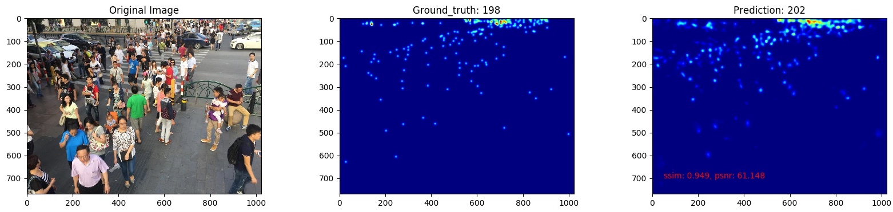
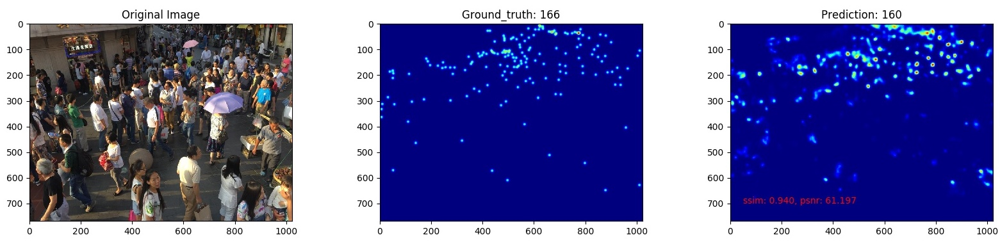
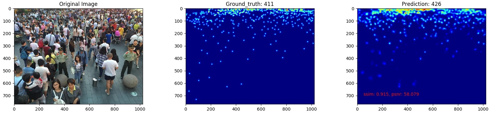

Examples of predictions of our model on ShanghaiTech B [1]:   
This project implemented model for counting how many people in conjested crowds. In the projects, we conducted a light-weight model of 0.82 million parameters and included dilated convolutions to help capture information of various head sizes. In crowds of 200 people, our model achieved absolute error of 10. We trained the model on three public datasets: ShanghaiTech A / B [1], WorldExpo [2], and UCSD [3].
[1] Zhang, Yingying, et al. “Single-image crowd counting via multi-column convolutional neural network.” Proceedings of the IEEE conference on computer vision and pattern recognition. 2016.
[2] Zhang, Cong, et al. “Cross-scene crowd counting via deep convolutional neural networks.” Proceedings of the IEEE conference on computer vision and pattern recognition. 2015.
[3] A. B. Chan, Zhang-Sheng John Liang, and N. Vasconcelos. Privacy preserving crowd monitoring: Counting people without people models or tracking. In 2008 IEEE Conference on Computer Vision and Pattern Recognition, 2008